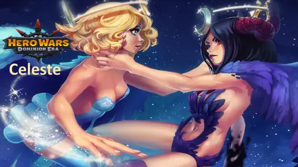
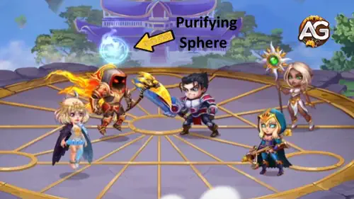
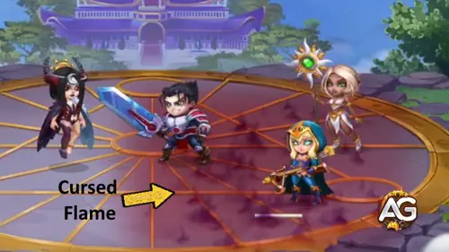
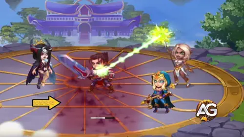
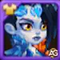

Celeste é uma das heroínas mais fascinantes de Hero Wars: Dominion Era, equilibrando-se entre os poderes da luz e das trevas.
Ela pode alternar de forma no meio da batalha, tornando-se uma das magas mais versáteis do jogo.
Em sua Forma de Luz, Celeste brilha como curandeira, removendo penalidades e restaurando a força de seus aliados.
Em sua Forma de Trevas, ela se torna uma maga temível, bloqueando a cura inimiga e convertendo-a em dano bruto.
Esse equilíbrio delicado a torna essencial tanto em equipes físicas quanto mágicas.

Guia da Celeste - Hero Wars: Dominion Era, um jogo desenvolvido pela Nexters.
Quem é a Celeste?
Celeste é uma Maga e Curandeira que luta da linha do meio, tendo a Inteligência como atributo principal.
Ela personifica a dualidade de dia e noite, oferecendo proteção e destruição dependendo de sua forma.
Classe: Maga / Curandeira
Posição: Linha do Meio
Atributo principal: Inteligência
Suas habilidades de luz e trevas a tornam uma heroína flexível para muitas composições de equipe. Seja apoiando aliados com cura
ou punindo inimigos negando a cura, Celeste sempre traz um valor único ao campo de batalha.
Este guia explora suas habilidades, melhores sinergias e estratégias para maximizar seu potencial,
ajudando você a dominar as batalhas usando tanto a luz do sol quanto as sombras.
Prós e Contras da Celeste - Hero Wars: Web e Facebook
✅ Prós
Formas duplas permitem alternar entre cura (Forma da Luz) e alto dano mágico com efeitos de corte de cura (Forma das Trevas).
A habilidade suprema “Dois Destinos” pode ser usada com apenas 50% de energia, permitindo que ela mude de forma constantemente e se adapte à batalha.
Grande sinergia com heróis como Nebula e Iris para maximizar o dano mágico.
A Forma da Luz cura aliados e remove efeitos negativos, tornando-a um suporte versátil em times de dano físico.
A Forma das Trevas bloqueia a cura inimiga e a converte em dano, tornando-a eficaz contra equipes focadas em sustentação.
Alto crescimento de Ataque Mágico e Penetração Mágica com artefatos, mascotes e glifos, aumentando tanto o dano quanto a utilidade.
❌ Contras
Depende fortemente de Dano Mágico; sofre contra heróis imunes à magia, como Rufus.
As mecânicas de cura em área e corte de cura são menos eficazes contra dano explosivo de alvo único.
Vulnerável a escudos e efeitos de absorção de dano (ex.: Corvus, Isaac).
A troca de formas exige gestão de energia; perder a efetividade de Dois Destinos pode reduzir bastante o impacto geral.
Frágil na linha de frente; o posicionamento é crucial para sobreviver enquanto maximiza suas habilidades.
Prioridade de Evolução das Habilidades da Celeste - Hero Wars: Dominion Era
Entenda as habilidades da Celeste de forma simples e veja quais evoluir primeiro para cura, dano e utilidade de equipe em Hero Wars.
1º - Dois Destinos
Esta é a ultimate da Celeste e o principal motivo de ela ser tão única. Permite alternar entre a Forma de Luz e a Forma de Trevas.
Na Forma de Trevas, ela cria uma grande chama na equipe inimiga que bloqueia a cura. Na Forma de Luz, cura o aliado mais fraco por 5 segundos.
Sem esta habilidade, Celeste não pode mudar de forma e perde seu poder principal.
Outro diferencial desta habilidade é que Celeste é a única heroína em Hero Wars: Dominion Era que precisa de apenas
50% da barra de energia (em vez dos 100% usuais) para ativar sua ultimate.
Isso significa que ela pode alternar de forma com mais frequência do que qualquer outro herói, equilibrando constantemente cura e anti-cura durante a batalha.
Fórmula: Trevas – Bloqueio de Cura: (70% Atq. mág. + Nvl * 350) | Luz – Cura: (70% Atq. mág. + Nvl * 100) ao longo de 5s.
Prioridade de Evolução:Muito Alta – Sempre evolua esta habilidade primeiro, pois desbloqueia tanto seu papel de curandeira quanto de causadora de dano.
Forma de Luz – Cura

Habilidade - Dois Destinos Luz, Hero Wars Dominion Era.
Forma de Trevas – Bloqueio de Cura

Habilidade - Dois Destinos Trevas, Hero Wars Dominion Era.
2º - Noite Branca
Esta habilidade funciona automaticamente durante a batalha.
Na Forma de Trevas, aplica uma chama menor de bloqueio de cura nos inimigos.
Na Forma de Luz, cura novamente o aliado mais fraco.
Por ativar com frequência, oferece suporte constante ou pressão sobre o inimigo.
Fórmula: Trevas – Bloqueio de Cura: (70% Atq. mág. + Nvl * 250) | Luz – Cura: (70% Atq. mág. + Nvl * 100) ao longo de 5s.
Prioridade de Evolução:Alta – Grande valor consistente. Evolua em segundo para melhorar a cura e o anti-cura.
Forma de Luz – Cura
Habilidade - White Night Luz, Hero Wars Dominion Era.
Forma de Trevas – Bloqueio de Cura

Habilidade - White Night Trevas, Hero Wars Dominion Era.
3º - Limbo
Limbo adiciona potência extra às formas da Celeste.
Na Forma de Trevas, parte da cura bloqueada do inimigo é convertida em dano mágico.
Na Forma de Luz, purifica os aliados removendo efeitos negativos antes de curar.
Isso a torna uma heroína híbrida de suporte e causadora de dano.
Fórmula: Trevas – (42% + (Nvl * 0,2 + 20)%) da cura bloqueada convertida em dano | Luz – chance de bloquear debuff ~130.
Prioridade de Evolução:Médio-Alta – Útil para purificação e dano extra. Evolua depois das duas habilidades principais.
Esta é a habilidade passiva da Celeste.
Na Forma de Trevas, seus ataques básicos causam dano mágico.
Na Forma de Luz, seus ataques básicos curam um pouco os aliados.
Embora seja útil, não tem tanto impacto quanto as outras habilidades.
Celeste se beneficia principalmente de mascotes que aumentam seu dano mágico e sobrevivência, além de potencializar suas mecânicas únicas de cura e anti-cura.
Merlin é o melhor mascote para Celeste, pois aumenta o Ataque Mágico e a Penetração Mágica, tornando seu dano e cura muito mais fortes. Sua habilidade de patronagem Tempus Magica! acelera a execução das habilidades de Luz e Trevas, permitindo que ela cure com mais frequência ou aplique bloqueio de cura mais rápido. Essa sinergia se encaixa perfeitamente em seu papel duplo na batalha.
Axel é uma excelente opção defensiva para Celeste. Sua patronagem reduz o dano que ela pode receber em um único golpe, mantendo-a viva por mais tempo para continuar curando ou bloqueando a cura inimiga. Embora não aumente diretamente seu poder mágico, o bônus de sobrevivência o torna uma escolha confiável em batalhas mais difíceis.
Biscuit funciona bem com a Forma de Trevas da Celeste, já que ambos focam na redução de cura. Com Biscuit, os ataques da Celeste enfraquecem ainda mais a cura inimiga, acumulando-se com o efeito de sua Chama Amaldiçoada. No entanto, como isso se sobrepõe à sua própria habilidade, acaba sendo menos impactante do que Merlin ou Axel.
Khorus oferece escudos baseados no dano mágico causado, o que pode ser útil para Celeste e outros heróis de Inteligência. Embora adicione sobrevivência à equipe, não melhora diretamente o papel principal da Celeste tanto quanto Merlin ou Axel. É uma opção situacional para equipes com foco em magia.
Melhor Skin para Celeste – Hero Wars: Dominion Era
As skins da Celeste aumentam bastante sua cura e dano mágico. Escolher a ordem certa de evolução maximiza seu papel como curandeira e causadora de dano.
Skin Padrão – Inteligência
Atributos ganhos: Inteligência +1365
- Ataque mágico por Inteligência: +4.095
- Defesa mágica por Inteligência: +1.365
- Ataque físico por Inteligência: +1.365
Prioridade de Evolução:Alta – Esta skin melhora os atributos gerais e aumenta sua cura e dano, sendo uma ótima evolução inicial.
Total de Pedras de Skin de Inteligência para nível máximo:
30.825

Skin de Inverno – Ataque Mágico
Atributos ganhos: Ataque Mágico +10.650
Prioridade de Evolução:Muito Alta – Aumenta diretamente tanto sua cura na Forma de Luz quanto seu dano na Forma de Trevas, sendo a skin mais impactante para Celeste.
Total de Pedras de Skin de Inteligência para nível máximo:
53.412
Skin de Primavera – Ataque Mágico
Atributos ganhos: Ataque Mágico +10.650
Prioridade de Evolução:Médio-Alta – Também aumenta sua cura e dano, mas como a Skin de Inverno já cobre Ataque Mágico, esta se torna uma evolução secundária.
Total de Pedras de Skin de Inteligência para nível máximo:
55.410
Skin Romântica – Defesa Mágica
Atributos ganhos: Defesa Mágica +10.650
Prioridade de Evolução:Média – Fornece resistência contra equipes de dano mágico, útil em confrontos específicos, mas não tão forte universalmente quanto as skins ofensivas.
Total de Pedras de Skin de Inteligência para nível máximo:
55.410
Skin de Baile de Máscaras – Penetração Mágica
Atributos ganhos: Penetração Mágica +10.650
Prioridade de Evolução:Baixa – Ajuda a ignorar a defesa mágica inimiga, mas como o principal papel da Celeste é curar e dar suporte, esta skin é menos essencial que as de Ataque Mágico.
Total de Pedras de Skin de Inteligência para nível máximo:
55.410
Prioridade de Evolução dos Artefatos da Celeste – Hero Wars: Dominion Era
Entender a prioridade dos artefatos da Celeste é fundamental para aumentar tanto seu potencial de suporte quanto de dano. Focar nos corretos maximiza o impacto de sua Forma de Luz e Forma de Trevas.
Artefato de Arma: Coroa da Celeste
Ataque Mágico: +50.190
Prioridade de Evolução:Muito Alta – Este é o artefato mais importante da Celeste, pois ativa junto com sua habilidade suprema, aumentando frequentemente o Ataque Mágico de toda a equipe por 9 segundos. Como sua ultimate custa apenas 50% de energia, esse bônus é ativado muitas vezes, fortalecendo bastante a performance do time.
Prioridade de Evolução:Alta – A Penetração Mágica é crucial para o dano da Forma de Trevas da Celeste, garantindo que suas chamas e bloqueio de cura atravessem as defesas inimigas. O Ataque Mágico adicional também melhora tanto suas curas quanto seu dano, tornando este o segundo artefato mais importante.
Prioridade de Evolução:Média – O anel fornece um ótimo escalonamento de atributos por meio da Inteligência, aumentando tanto sua cura quanto seu dano. Porém, seu impacto é mais geral e menos focado na equipe em comparação à Arma e ao Livro, então deve ser evoluído depois deles.
Prioridade de Evolução dos Glifos da Celeste
Descubra a melhor ordem de evolução dos glifos da Celeste em Hero Wars: Dominion Era para maximizar sua cura, dano e sobrevivência.
1º Glifo – Ataque Mágico:
Aumento de Atributo: +6.500 Ataque Mágico
Prioridade de Evolução:Muito Alta – Aumenta tanto a cura da Forma de Luz quanto o dano da Forma de Trevas. Sempre evolua primeiro para o máximo impacto em batalha.
2º Glifo – Vida:
Aumento de Atributo: +62.200 Vida
Prioridade de Evolução:Média – Melhora a sobrevivência, mas não aumenta diretamente a cura ou o dano. Evolua após os glifos ofensivos, principalmente se enfrentar equipes de alto dano explosivo.
3º Glifo – Defesa Mágica:
Aumento de Atributo: +6.500 Defesa Mágica
Prioridade de Evolução:Baixa – Protege contra magos inimigos, mas tem pouco impacto em seus papéis principais. Evolua apenas para sobrevivência em batalhas contra equipes focadas em magia.
4º Glifo – Penetração Mágica:
Aumento de Atributo: +6.500 Penetração Mágica
Prioridade de Evolução:Alta – Garante que o dano da Forma de Trevas atinja inimigos com alta resistência. Essencial em lutas contra tanques ou magos resistentes.
Prioridade de Evolução:Média – Um atributo equilibrado, mas com menos impacto direto do que Ataque Mágico ou Penetração. Evolua depois dos principais glifos ofensivos.
Como Counterar a Celeste - Hero Wars: Dominion Era
Saiba quais heróis conseguem counterar a Celeste de forma eficaz com base em suas habilidades e como exploram suas fraquezas em batalha.
Cornelius
Cornelius atinge o inimigo com maior Inteligência com um monólito, causando um dano massivo proporcional à Inteligência. Como o principal atributo da Celeste é Inteligência, ela sofre muito dano.
O altar de Corvus causa dano puro a todos os inimigos. Como a Celeste depende de dano em área com corte de cura, Corvus ignora seus pontos fortes e a pune severamente.
Isaac
O Capacitor de Poder Mágico Tes’Lin do Isaac absorve parte de qualquer dano mágico, incluindo o da Celeste, e o converte em Carga. Isso impede que ela consiga causar dano de forma eficaz ao Isaac e seus aliados.
Rufus é imune a dano mágico, e como a Celeste causa apenas dano mágico até mesmo em seus ataques básicos — ela não consegue eliminá-lo em nenhuma circunstância.
Melhores Bandeiras de Guerra da Celeste - Hero Wars
Descubra as melhores Bandeiras de Guerra para Celeste, aumentando sua cura, dano mágico e utilidade geral da equipe nas batalhas de Dominion Era.
Bandeira de Recuperação:
Esta bandeira aumenta toda a cura em 10%, melhorando perfeitamente a Forma da Luz da Celeste e tornando sua cura mais eficaz para toda a equipe.
Benefício para Celeste e Equipe: O aumento da cura permite que Celeste mantenha os aliados vivos por mais tempo, em sinergia com times de dano físico e híbridos.
Bandeira de Declínio:
Esta bandeira reduz a cura inimiga em 10%, maximizando a eficácia da Forma das Trevas da Celeste e suas mecânicas de corte de cura.
Benefício para Celeste e Equipe: Enfraquecer a sustentação inimiga permite que Celeste e seus aliados causem mais dano ao longo do tempo e controlem o fluxo da batalha.
Melhores Times para Celeste – Hero Wars: Dominion Era
Principais Times de Defesa para Celeste
#
Tabela: Melhores Times de Defesa para Celeste
Lyria, Dante, Celeste, Orion, Augustus, Khorus
Astaroth, Satori, Celeste, Jorgen, Faceless, Axel
Astaroth, Satori, Celeste, Amira, Lian, Axel
Principais Times de Ataque para Celeste
#
Tabela: Melhores Times de Ataque para Celeste
Khorus, Augustus, Orion, Celeste, Dante, Lyria
Axel, Faceless, Jorgen, Celeste, Satori, Astaroth
Axel, Lian, Amira, Celeste, Satori, Astaroth
Conclusão
A habilidade única da Celeste de ganhar energia rapidamente permite que ela mude de forma com frequência, oferecendo às equipes uma combinação flexível de cura e dano mágico.
No entanto, o bônus de seu artefato de arma dura apenas por um tempo limitado, então o timing cuidadoso é essencial para maximizar seu efeito.
Atualmente, a Celeste brilha mais nos estágios de campanha, especialmente nos níveis avançados, onde os inimigos possuem fortes habilidades de cura, tornando seu corte de cura e suporte de burst inestimáveis.
Apesar disso, seu uso no meta PvP atual é limitado, já que muitas equipes competitivas favorecem causadores de dano mais rápidos ou consistentes.
Sobre o autor
Alexandre Domingos é pós-graduado em Engenharia e atua como Supervisor de Produção. Nas horas vagas, se aventura como youtuber e blogueiro no Alexandre Games, unindo sua paixão por tecnologia e estratégia com o mundo dos games. Desde os 5 anos mergulha nesse universo, jogando em plataformas clássicas como MSX, Master System, Nintendo e até em um velho PC 286. Desde 2019, Alexandre também joga Hero Wars e Mobile Legends, entre outros jogos mobile, criando guias, tutoriais e análises para a comunidade.
Você gostou do nosso Guia da Celeste para Hero Wars Web e Facebook? Há algo que não entendeu ou gostaria de sugerir mudanças? Convidamos você a se juntar à nossa sessão de comentários na página do Alexandre Games Blog. Não hesite em expressar sua opinião, clarificar suas dúvidas e compartilhar sua sugestões. Clique no botão abaixo para começar:


 30.825
30.825